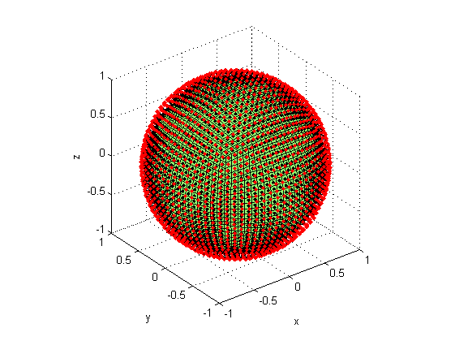
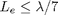
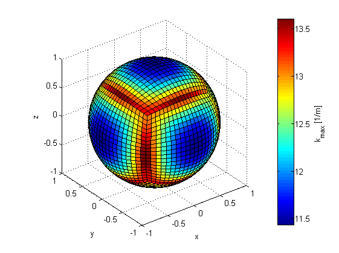
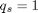
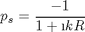
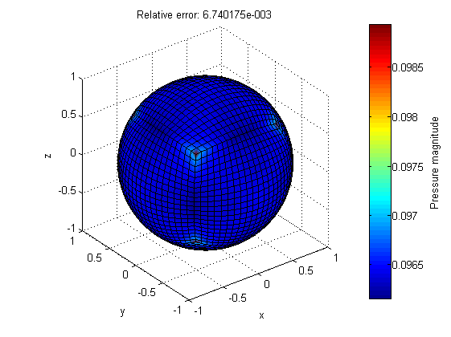
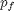
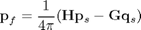
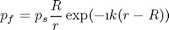
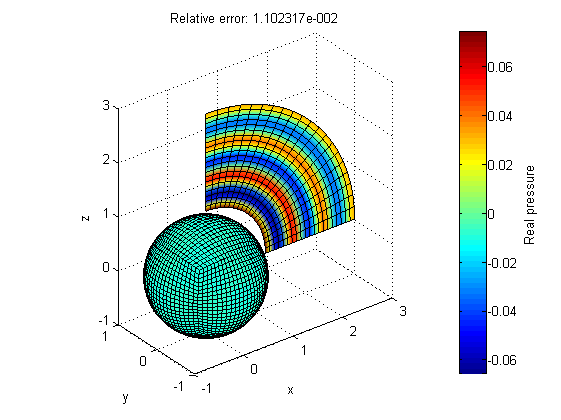

Radiation from a pulsating sphere
This tutorial introduces how to use the toolbox NIHU to solve a simple exterior acoustic radiation problem.
The problem is radiation by a pulsating sphere to the infinite exterior domain. The boundary conditions are defined as prescribed pressure derivative (normal velocity) on the sphere surface. The computed surface and field point pressures are compared with analytical solutions.
Contents
Surface mesh generation
Generate a sphere geometry with given radius and division parameter. The division parameter is the number of elements along the radius of the sphere.
R = 1; % radius nR = 10; % division parameter mesh = create_sphere_boundary(R, nR);
Check that the mesh is directed outward by plotting the normals with the toolbox function plot_elem_normals
figure; plot_mesh(mesh); plot_elem_normals(mesh); view(3);
The maximal applicable frequency is determined by the rule of thumb

The maximal applicable wave number at each element of the mesh is computed by the toolbox function bemkmax.
ratio = 7;
kmax_elem = bemkmax(mesh, ratio);
figure;
plot_mesh(mesh, kmax_elem); view(3);
c = colorbar; ylabel(c, 'k_{max} [1/m]');
 The minimum of these values is the overall frequency limit of computations with this mesh. In the present example, the wave number is set slightly lower than the maximal applicable wave number.
kmax = min(kmax_elem); k = .9*kmax;
Boundary conditions
The boundary conditions are defied on the sphere element corners (nodes) as a uniform normal derivative .
nNodes = size(mesh.Nodes,1); qs = ones(nNodes,1);
Generate BEM matrices and solve system
The BEM system matrices are generated by the toolbox function bemHG. The system of equations
is solved by direct matrix inversion.
[H, G] = bemHG(mesh, k, 'lin'); % Generate BEM matrices ps = H \ (G * qs); % solve the system
The surface pressure  is compared to the analytical solution of the problem. The analytical solution is
is compared to the analytical solution of the problem. The analytical solution is

ps0 = -1 ./ (1+1i*k*R); % analytical pressure e = norm(ps-ps0)/norm(repmat(ps0,nNodes,1)); % compute relative error figure; plot_mesh(mesh, abs(ps)); view(3); c = colorbar; ylabel(c, 'Pressure magnitude'); title(sprintf('Relative error: %e', e));
Generate field point mesh
The field point mesh is an annular ring generated by revolving a line.
field = create_line([1.2*R 0 0; 3*R 0 0], 2*nR); field = revolve_mesh(field, [0 0 0], [0 -1 0], pi/4/nR, 2*nR); figure; plot_mesh(mesh); plot_mesh(field); view(3);

Compute field point pressure
The points of the field point mesh are extracted from the structure field, and are used to generate the field point BEM matrices with the toolbox function bemHG. The field point pressure  is computed as

points = field.Nodes(:,2:4); % field point coordinates [H, G] = bemHG(mesh, k, 'lin', points); pf = (H * ps - G * qs) / (4*pi);
The field point pressure is compared to the analytical solution. The analytical solution is given by

r = sqrt(dot(points,points,2)); pf0 = ps0 * (R./r) .* exp(-1i*k*(r-R)); e = norm(pf-pf0)/norm(pf0); figure; plot_mesh(mesh, real(ps)); plot_mesh(field, real(pf)); c = colorbar; ylabel(c, 'Real pressure'); title(sprintf('Relative error: %e', e)); view(3);